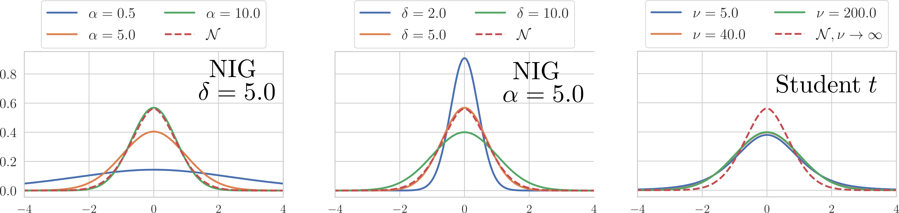

Robust Blind Source Separation with Heavy-Tailed Models
RIKEN AIP Center Open Seminar
matfontaine.github.io
August 25th, 2021
Mathieu FONTAINE, Kouhei SEKIGUCHI, Aditya Arie NUGRAHA, Yoshiaki BANDO, Kazuyoshi YOSHII
Outline
I - Introduction
II - Gaussian Scale Mixture
III - Parameter Estimation : Application to GH-FastMNMF and GG-FastMNMF
IV - Speaker Separation Experiments
V - Conclusion and Future Works
- Fontaine, M. et al. (2021, TASLP, In review). Generalized Fast Multichannel Nonnegative Matrix Factorization Based on Gaussian Scale Mixtures for Blind Source Separation
I - Introduction
Multichannel Blind Speech Separation?
In the Short-time Fourier transform (STFT) domain with $\bold{x}_{ft} \in \mathbb{C}^{M}$: $$ \underbrace{\vphantom{\sum_{n=1}^{N-1} \bold{x}_{nft}}\bold{x}_{ft}}_{\text{observation}} = \underbrace{\sum_{n=1}^{N-1} \bold{x}_{nft}}_{\text{speakers}} + \underbrace{\vphantom{\sum_{n=1}^{N-1} \bold{x}_{nft}}\bold{x}_{Nft}}_{\text{noise}} $$
$\qquad\qquad\qquad\qquad\qquad\qquad\qquad\qquad\qquad M\text{: number of channels}$ $\qquad\qquad\qquad\qquad\qquad\qquad\qquad\qquad\qquad F\text{ : number of frequency bins}$ $\qquad\qquad\qquad\qquad\qquad\qquad\qquad\qquad\qquad T\text{ : number of time frames}$$\qquad\qquad\qquad\qquad\qquad\qquad\qquad\qquad\qquad N\text{: number of sources}$
Drawbacks of light-tailed models
- The initialization is sometimes tricky for the power spectral density ${ \color{black}\text{[Bou. 08]}}$
- Light tails $\implies$ less robust against impulsive noise or uncommon scenario
In $\text{[Sim. 19]}$, suggest to use heavy-tailed models for gradient descent algorithm
- Boutsidis C. (2008, Pattern Recognition). SVD based initialization: A head start for nonnegative matrix factorization
- Simsekli U. (2019, Deep AI). A Tail-Index Analysis of Stochastic Gradient Noise in Deep Neural Networks
II - Gaussian Scalar Mixture
Gaussian Scalar Mixture (GSM) Distribution
- Gaussian where the covariance is randomly perturbed
- If $\bold{u}$ is a GSM, then its PDF. is
Examples of Gaussian Scale Mixture (1/3)
(Symmetric Isotropic) Generalized Hyperbolic (GH) distribution
- $\phi$ is known: generalized inverse Gaussian distribution
- The PDF of $\bold{u}$ is given by:
- $\eta, \alpha$: controls the heaviness of the tails
- $\delta, \bold{A}$: shape ("scale") parameter and covariance matrix
- $e.g.$ generalized Student $t$ $(\eta=\frac{-\nu}{2}, \alpha=0, \delta=\sqrt{\nu})$, Gaussian, Normal-Inverse Gaussian (NIG) $(\eta=-0.5, \alpha>0, \delta>0)$ are GH 
Examples of Gaussian Scale Mixture (2/3)
(Symmetric) Generalized Super-Gaussian Distribution
- for $0<\beta\leq 2$, GSM. But $\phi$ is unknown ! (except for $\beta=1, \beta=2$)
- The PDF of $\bold{u}$ is given by:
- $\beta$: shape parameter controling the tail-index
- $\bold{A}$: shape matrix
Examples of Gaussian Scale Mixture (3/3)
(Symmetric) Elliptically contoured $\alpha$-stable Distribution
- $0<\alpha\leq 2$: characteristic exponent
- $\alpha$ is estimated and applied with an AR-FastMNMF in $\text{[Fon. 21]}$
- $\phi$ is a positive $\alpha$-stable distribution but a closed-form of the PDF is unknown !
- The PDF of $\bold{u}$ for $\alpha \notin \{0.5,1,2\}$ is unknown !
- M. Fontaine, et al. (INTERSPEECH 2020). Unsupervised Robust Speech Enhancement Based on Alpha-Stable Fast Multichannel Nonnegative Matrix Factorization.
- M. Fontaine, et al. (INTERSPEECH 2021). Alpha-Stable Autoregressive Fast Multichannel Nonnegative Matrix Factorization for Joint Speech Enhancement and Dereverberation.
A plethora of FastMNMF variants
How to derive a parameter technique that unifies all FastMNMF versions ?
III - Parameter Estimation : Application to GH-FastMNMF and GG-FastMNMF
Probabilistic Model
- Independent GSM model on sources:
$\forall n, \mathbf{x}_{nft} \mid {\color{red} \phi_{ft}} \sim \mathcal{N}_{\mathbb{C}}\left(\mathbf{0}, {\color{red} \phi_{ft}}\lambda_{nft}\mathbf{G}_{nf}\right)$
- The covariance perturbation ${\color{red} \phi_{ft}}$ is the same for all sources
- The mixing model becomes:
$\mathbf{x}_{ft} \mid {\color{red} \phi_{ft}} \sim \mathcal{N}_{\mathbb{C}}\left(\mathbf{0},{\color{red} \phi_{ft}}\sum_{n=1}^{N}\lambda_{nft}\mathbf{G}_{nf}\right)$
- $\lambda_{nft}$: power spectral density of source $n$ at time-frequency bin $(f,t)$
- $\bold{G}_{nf}$: spatial covariance matrix of source $n$ at frequency $f$
GSM FastMNMF + Filtering Method
Weighted-shared JD model
- $\bold{Y}_{ft} = \bold{Q}_f^{-1}\left({\color{red}\phi_{ft}}\underbrace{\sum_{n=1}^{N}\underbrace{{\color{green}\lambda_{nft}}\mathrm{Diag}\left(\bold{\tilde{g}}_{n}\right)}_{=\mathrm{Diag}\left(\tilde{\bold{y}}_{nft}\right)}}_{=\mathrm{Diag}\left(\tilde{\bold{y}}_{ft}\right)} \right)\bold{Q}_{f}^{-\mathrm{H}}$
- $\bold{x}_{ft} \mid \bold{\Phi} \sim \mathcal{N}_{\mathbb{C}}\left(\bold{0}, \bold{Y}_{ft}\right)$
- MNMF model for ${\color{green}\lambda_{nft}}$ parameters
Marginalized Wiener filter
- Using the conditional Gaussian model we have: $$ \mathbb{E}_{\bm\phi}\left[ \mathbb{E}\left[ \mathbf{x}_{nft}\mid\mathbf{\Theta}, \bm{\phi}, \mathbf{x}_{ft}\right]\right] = \mathbf{Q}_{f}^{-1} \mathrm{Diag} \left( \tilde{\mathbf{y}}_{nft} \right) \mathrm{Diag} \left( \tilde{\mathbf{y}}_{ft} \right)^{-1}\mathbf{Q}_{f}^{-\mathrm{H}} \mathbf{x}_{ft}. $$
- Where $\mathbf{\Theta}$ are all NMF coefficients, diagonalizers $\bold{Q}_{f}$ and diagonal $\tilde{\bold{g}}_{n}$ parameters
The filtering technique is equivalent to the classical Multichannel Wiener filter
Lower-bound
Minorization-Maximization technique for the parameter estimation- $\bold{X}$ is GSM. Then:
- $\text{KL}$ denotes the Kullback-Leibler divergence
- $\tilde{x}_{ftm} = \left|\bold{q}_{fm}^{\mathrm{H}}\bold{x}_{ft}\right|$
- $\omega_{ftm}, \pi_{nkftm}$ are auxiliary variables (depending on $\Theta$ to satisify the equality)
- $q\left(\theta\right)$ satisfies the equality with the LL when $ q(\theta) = p\left(\phi \mid \bold{X}, \bold{\Theta}\right)$
How to compute $\mathbb{E}_{q\left(\theta\right)}\left[\phi_{ft}^{-1}\right]$ ?
E-Step: computation of $\mathbb{E}_{p\left(\phi \mid \bold{X}, \bold{\Theta}\right)}\left[\phi_{ft}^{-1}\right]$
Thanks to the GSM assumption, it can be shown that:$ \frac{d\log p\left(\bold{x}_{ft}\right)}{d\bold{x}_{ft}^{\mathrm{H}}} =-\sum_{m=1}^{M}2\bold{q}_{fm}^{\mathrm{H}}\bold{x}_{ft}\bold{q}_{fm}\tilde{y}_{ftm}^{-1}\mathbb{E}_{p\left(\phi \mid \bold{X}, \bold{\Theta}\right)}\left[\phi_{ft}^{-1}\right] $
- $\tilde{y}_{ftm} = \sum_{n,k=1}^{N,K}\tilde{g}_{nm}w_{nfk}h_{nkt}$
- Only the knowledge of the log PDF is required
- The knowledge of the law of $\phi_{ft}$ is not necessary !
E-Step for GH-FastMNMF and GG-FastMNMF
We apply the following formula in the case of a GH model and a GG-FastMNMF:$ \frac{d\log p\left(\bold{x}_{ft}\right)}{d\bold{x}_{ft}^{\mathrm{H}}} =-\sum_{m=1}^{M}2\bold{q}_{fm}^{\mathrm{H}}\bold{x}_{ft}\bold{q}_{fm}\tilde{y}_{ftm}^{-1}\mathbb{E}_{p\left(\phi \mid \bold{X}, \bold{\Theta}\right)}\left[\phi_{ft}^{-1}\right] $
GH-FastMNMF
We get the following result for ${\color{red}\tilde{\phi}_{ft}^{-1}} \triangleq \mathbb{E}_{p\left(\phi \mid \bold{X}, \bold{\Theta}\right)}\left[\phi_{ft}^{-1}\right]$:- The results coincide with the already proposed $\nu$-FastMNMF and $\mathcal{N}$-FastMNMF
GG-FastMNMF
We get the following result for ${\color{red}\tilde{\phi}_{ft}^{-1}} \triangleq \mathbb{E}_{p\left(\phi \mid \bold{X}, \bold{\Theta}\right)}\left[\phi_{ft}^{-1}\right]$:M-Step
Multiplicative update rules (MUR)
- Let us assume that ${\color{red}\tilde{\phi}_{ft}^{-1}} \triangleq \mathbb{E}_{p\left(\phi \mid \bold{X}, \bold{\Theta}\right)}\left[\phi_{ft}^{-1}\right]$ are known
- As in FastMNMF, the MURs are given as the Itakura-Saito (IS) minimization:
- $w_{nfk}\leftarrow w_{nfk}\sqrt{\frac{\sum_{t, m=1}^{T, M} {\color{red}\tilde{\phi}_{ft}^{-1}}h_{nkt} \tilde{g}_{nm} \tilde{x}_{ftm}\tilde{y}_{ftm}^{-2}} {\sum_{t, m=1}^{T, M}h_{nkt} \tilde{g}_{nm} \tilde{y}_{ftm}^{-1}}}; h_{nkt}\leftarrow h_{nkt}\sqrt{\frac{\sum_{f, m=1}^{F, M} {\color{red}\tilde{\phi}_{ft}^{-1}}w_{nfk} \tilde{g}_{nm} \tilde{x}_{ftm}\tilde{y}_{ftm}^{-2}} {\sum_{f, m=1}^{F, M} w_{nfk} \tilde{g}_{nm} \tilde{y}_{ftm}^{-1}}}; $
- $\tilde{g}_{nm}\leftarrow \tilde{g}_{nm}\sqrt{\frac{\sum_{f, t, m=1}^{F, T, M} {\color{red}\tilde{\phi}_{ft}^{-1}}\lambda_{nft} \tilde{x}_{ftm}\tilde{y}_{ftm}^{-2}} {\sum_{f, t, m=1}^{F, T, M} \lambda_{nft}\tilde{y}_{ftm}^{-1}}}\quad\quad$ where $\tilde{\bold{g}}_{n} = \left[\tilde{g}_{n1},\dots,\tilde{g}_{nm}\right]^{\top}$
Iterative projection method
- $\bold{q}_{fm}\leftarrow(\bold{Q}_f \bold{V}_{fm})^{-1}\bold{e}_m;\quad \bold{q}_{fm}\leftarrow(\bold{q}_{fm}^{\mathrm{H}}\bold{V}_{fm}\bold{q}_{fm})^{-\frac{1}{2}}\bold{q}_{fm}$ $\bold{V}_{fm} = \frac{1}{T}\sum_{t=1}^{T}{\color{red}\tilde{\phi}_{ft}^{-1}} \bold{x}_{ft}\bold{x}_{ft}^{\mathrm{H}} y_{ftm}^{-1}$ $\bold{e}_m = \left[\delta_{1,m}\dots,\delta_{M,m}\right]^{\top}$ with $\delta_{m,m^{\prime}}=\begin{cases}1 & \text{if } m=m^{\prime}\\ 0 & \text{otherwise}\end{cases}$
IV - Speaker Separation Experiments
Settings for Speaker Separation
Dataset description
- spatialized WSJ0-2,3mix dataset sampled at $16~$kHz recorded with $8$ microphones
- RT$_{60}$ ranging from $0.2s$ to $0.6s$
- $N=2$ or $N=3$ speakers and $M=N,5,8$ (determined/overdetermined case)
- $100$ utterances for the first experiment (dev set)
- $200$ utterances for the second experiment (test set)
- Signal to Distorsion Ratio (SDR), Signal to Artifiact Ratio (SAR) and Signal to Interference Ratio (SIR)(higher is better)
Scores
Baseline Methods and Configuration
Methods
- $\mathcal{N},\nu$-FastMNMF: Gaussian and Student $t$ FastMNMF
- GG-FastMNMF: Super Gaussian FastMNMF with $0<\beta\leq2$
- NIG-FastMNMF: proposed method with hyperparameters $(\alpha, \delta)$
Settings
- $300$ iterations for the EM algorithm are considered
- NMF coefficients are randomly initialized
- Demixing matrix in ILRMA and $\bold{Q}_{f}$ are initialized as identity matrix $\forall f$
- The matrix $\left[\tilde{\bold{g}}_{1}, \dots, \tilde{\bold{g}}_{N}\right]^{\top} \in \mathbb{R}^{N\times M}$ is initialized as the circulant matrix
SDR,SAR,SIR performances

- The low NIG-FastMNMF SAR performance may be due to modified Bessel function calculation
- The best SDR is globally reached by NIG-FastMNMF
- Surprisely, the best SAR is in general for $t$-FastMNMF
3 speakers audio demonstration
$\mathcal{N}$-FastMNMF
$t$-FastMNMF
GG-FastMNMF
NIG-FastMNMF
V - Conclusion and Future Works
Conclusion & Future Works
Conclusion
- Extension of Gaussian FastMNMF to GSM-FastMNMF
- Outperforms the state-of-the-art given the good set of parameters
- Easy to implement
Future works
Current parameter model
- Improve NIG by smoothing the parameters
- Replace the modified Bessel function estimation by a faster/more stable one
Deep Neural Network extensions
- Replace the NMF speech model by a heavy-tailed deep speech prior $\color{black}\text{[Fon. 19]}$
- Use a normalizing flow applied on FastMNMF decomposition $\color{black}\text{[Nug. 20]}$
- A.A. Nugraha et al. (SPL, 2020) Flow-Based Independent Vector Analysis for Blind Source Separation.
- M. Fontaine et al. (EUSIPCO, 2019). Cauchy Multichannel Speech Enhancement with a Deep Speech Prior.
Thank you for your attention ! Questions ?